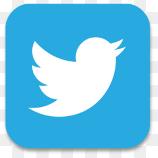

Najpopularnija drustvena mreza,s oko 2 milijarde korisnika.
Osnovana 2004. godine.Najvecu ekspanziju facebook je dozivio na prijelazu iz
2005. u 2006. godinu kada se broj korisnika povecao s 5.5 milijuna na 12 milijuna.
Od tada brojka je u stalnom porastu.
Twitter je u ožujku 2006. godine stvorio Jack Dorsey, Noah Glass, Biz Stone i Evan Williams i pokrenuta u srpnju te godine.
Usluga je brzo stekla popularnost širom svijeta. Tijekom 2012. više od 100 milijuna korisnika zabilježilo je 340 milijuna tweeta dnevno,
a usluga je obrađivala prosječno 1,6 milijardi upita za pretraživanje dnevno.
Na YouTube prijavljeni korisnici mogu staviti, pogledati, ocijeniti, dijeliti, dodati favoritima, obavjestiti i komentirati na svim videozapisima.
Glazbeni spot pjevača Psy - "Gangnam Style", postao je prvi videozapis koji je prešao 1 milijardu pregleda na YouTubeu.
Cenzura YouTubea događa se u mnogim državama zbog raznih razloga. Korisnici iz država u kojima je YouTube blokiran mogu mu pristupiti korištenjem VPN usluga i proxy servera.
Hibrid je društvenog umrežavanja i fotografske usluge. Pokrenut je na iOS uređajima u listopadu 2010. godine. Trenutačno ga rabi više od milijardu korisnika (Lipanj, 2018).
Program može primijeniti različite filtre na snimljenim fotografijama pomoću kamera ugrađenih u pametne telefone.
Dodatno se fotografije mogu dijeliti s prijateljima, registriranim na Instagramu. Aplikacija omogućuje jednostavno fotografiranje s raznim retro efektima.